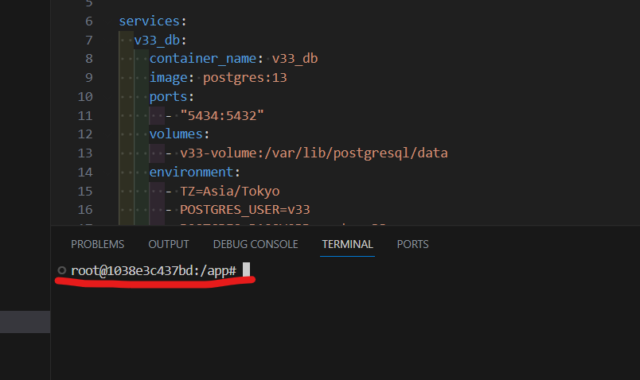
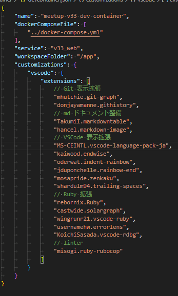
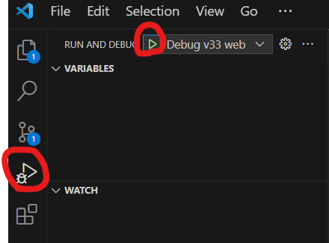

初心者向け Docker ハンズオン！Rails 環境構築を通して Docker の特徴に触れてみよう！
事前準備
- VSCode インストール
- Docker インストール
- GitHub アカウントの作成
今回のハンズオンの流れ
はじめに、Rails の scaffold 機能を用いて、簡単なユーザー登録画面を作成します。
ユーザー登録時にメールを送信させるのですが、その確認用のメール開発サーバーを Docker にて用意します。
その後、立ち上げたデータベース（PostgreSQL）のバージョンアップを Docker の起動設定を変更することで実施してみます。
開発メールサーバーの利用と、データベースのバージョンアップを通じて少しでも Docker の特徴に触れてもらえると幸いです！
2. Docker + VSCode の構築
2.1. プロジェクトのダウンロード
github ページ：https://github.com/miracleave-ltd/mirameetVol33
mirameetVol33-main.zipを解凍し、そのディレクトリをユーザー直下に配置します。
※画像は Windows の場合


2.2. 配置したフォルダを VScode で起動
# Windows
cd C:\Users\mirameetVol33-main
# Mac
cd ~/mirameetVol33-main
# Windows・Mac共通
code .
2.3. コンテナ内のフォルダを VSCode で開く
Dev Container 拡張機能を利用し、コンテナ内の VScode に接続します。
・コンテナで再度開くを選択

・ウインドウが表示されない場合は左下からコンテナで再度開く


・左下に開発コンテナと表示されていれば成功です

補足：開発コンテナーについて

2.2 で開いたものとは別の VSCode が立ち上がります。
立ち上がると Explorer 上にはコンテナ内にマウントされたソースコードが表示されるようになります。
よく ‘Docker コンテナの中に入る’ という表現を使うかと思います。以下のようなコマンドですね。
docker container exec -it コンテナ名 bash 等
コマンドからですと、CUI ベースで取っ付きにくい方も多いかと思いますが、この Dev Container ではほぼ同様のことを GUI（VSCode の見た目）ベースで操作出来るので、その点が大きなメリットとなります。
VSCode のターミナルも以下のようにコンテナ内に入った時のように表示されます。

devcontainer.json の設定により、VSCode のプラグインのインストールし直しは不要となります。
実際に JSON ファイルと、インストール済みの拡張機能を確認してみましょう！
〇.devcontainer\devcontainer.json

〇拡張機能

2.4. Rails プロジェクトを起動
ターミナルにて、以下コマンドを実行しデータベースの作成を行う
rails db:create
その後、実行設定の Debug v33 web から Rails を起動する

以下 URL をブラウザに入力し、画面が表示されれば環境構築は完了となります
http://localhost:3001/

補足：各ファイルの解説
Dockerfile
元になるイメージと変更する手順を記述する。
今回は ruby のバージョン 3.2.2 を指定しています。
また、Docker イメージのビルドはキャッシュが利用できるので Gemfile を先に追加して bundle install をすることにより
時間のかかるインストール処理をキャッシュすることができます。
docker-compose.yml
複数のコンテナをまとめて管理するための定義です。
今回は DB のコンテナである v33_db, Rails を起動する v33_web, メールサーバーを起動する v33_mail の 3 つのコンテナを定義しています。
また、DB のデータ永続化する為に、v33-volume というボリュームも定義しています。
.devcontainer/devcontainer.json
コンテナ内の VSCode についての定義です。 VSCode を起動するコンテナの指定やインストールするプラグインを定義できます。
3. 外部連携のモック化
開発用メールサーバーを利用して簡単なメール送信機能を作成して 動作確認してみましょう。
今回はmailhog というメールサーバーを用意します。Docker 公式にてイメージが提供されています。
mailhog は docker-compose.yml の以下部分に定義されており、DevContainer 起動時点で 既に環境が作成されており使用できる状態です。
v33_mail:
container_name: v33_mail
image: mailhog/mailhog
ports:
- "8025:8025"
ユーザー画面管理画面作成
Rails の scaffold 機能を使用して、簡単なユーザー画面を作成します。
はじめに以下コマンドを実施します。
rails g scaffold User name:string email:string
ユーザー用のモデルが作成されましたので、その内容を DB へ反映する為にマイグレーションをしましょう。
rails db:migrate
メール送信機能追加
Rails 組み込みの ActionMailer を使いメール機能の実装をします。
rails generate mailer User
作成された user_mailer.rb を以下の通り修正します。
〇 app\mailers\user_mailer.rb
class UserMailer < ApplicationMailer
default from: 'noreply@meetup.com'
def welcome_email
@user = params[:user]
mail(
subject: '登録完了',
to: @user.email
)
end
end
メールの本文に設定する内容を記載します。
touch app/views/user_mailer/welcome_email.text.erb
作成されたメール本文定義ファイルに以下の通り記載しましょう。
〇 app/views/user_mailer/welcome_email.text.erb
<%= @user.name %>様
新規登録ありがとうございます。
引き続きミートアップをお楽しみください。
ユーザー機能のコントローラに対して、以下差分となっている追加行を記載します。
〇 app/controllers/users_controller.rb
# POST /users or /users.json
def create
@user = User.new(user_params)
respond_to do |format|
if @user.save
+ UserMailer.with(user: @user).welcome_email.deliver_later
format.html { redirect_to user_url(@user), notice: "User was successfully created." }
format.json { render :show, status: :created, location: @user }
else
format.html { render :new, status: :unprocessable_entity }
format.json { render json: @user.errors, status: :unprocessable_entity }
end
end
end
最後に環境定義ファイルにメール送信先の設定を記載して準備完了です。
〇 config/enviroments/development.rb
config.action_mailer.delivery_method = :smtp
config.action_mailer.smtp_settings = { address: 'v33_mail', port: 1025 }
環境定義ファイルの内容を反映する為に一度サーバー再起動を行います。以下の更新ボタンを押下しましょう。
以下アドレスからユーザー画面を確認してみましょう。任意のユーザーを登録した後にメールが送信されます。
http://localhost:3001/users/

送信された内容を mailhog から確認してみましょう！
http://localhost:8025/
※疑似的なメール画面が表示されるはず

補足：その他開発用のメールサーバーについて
Rails の場合は letter_opener という Gem が存在します。
こちらも Rails でのメール開発を行う際の選択肢の一つに挙げられます。
4. DB のバージョンアップ
4.1 別バージョンの DB を起動
Docker で環境構築するメリットとして、ミドルウェアのバージョンアップを容易に実施することが出来ることが挙げられます。
ローカル環境に直接 PostgreSQL がインストールされている場合は、単純に pg_upgrade すれば良い場面もあるかもしれませんが、 例えば、案件 A：ver13、案件 B：ver13 の状態で案件 A だけ 15 にアップデートしたい！ という状況だといかがでしょう？
PC を複数台用意する訳にも行かず困ってしまいますよね？
現在 PostgreSQL13 で当システムは起動しているので、15 にアップデートしてみましょう。
seed を取得
バージョン 13 のコンテナからデータを取得します。 以下を VSCode ターミナルより実行します。
bundle exec rails db:seed:dump MODELS=users
その後データベースコンテナの削除を行います。 こちらはコマンドプロンプト等、VSCode 以外の DevContainer の外から実施します。
# 以下で立ち上がっているコンテナを確認しNameがv33_dbのIDを控えておきましょう
docker container ls -a
# 控えておいたIDに置き換えてコンテナを削除します
docker container rm -f [コンテナID]
ボリュームも同様に削除します。
# 同様に作成済みのボリュームを確認し、Nameを控えておきます
docker volume ls
# 控えておいたNameに置き換えます（おそらく以下のような名前になっている想定です）
docker volume rm -f mirameetvol33-main_v33-volume
バージョンをアップデート
・docker-compose.yml
v33_db:
container_name: v33_db
- image: postgres:13-alpine
+ image: postgres:15-alpine
ports:
- "5433:5432"
volumes:
- v33-volume:/var/lib/postgresql/data
environment:
- TZ=Asia/Tokyo
- POSTGRES_USER=v33
- POSTGRES_PASSWORD=meetupv33
Dev Container の接続を一度閉じて、再度接続します。

マイグレーション
VSCode で一度 DB を作成し、マイグレーションを実施します
rails db:create
rails db:migrate
バックアップしておいた seed データを投入して復元完了です
rails db:seed
データの復元に成功していれば、前ページの手順で作成したユーザーが再度見れるようになっているはずです！
また登録も問題なく出来るはずですのでサーバーをデバッグ起動し確認してみましょう！
http://localhost:3001/users/
以上で DB のバージョンアップは完了となります。
補足：本番稼働中システムに対する DB バージョンアップについて
当手順はあくまでローカル開発環境向けの手順となります。
本番稼働中のシステムにおいてはデータを損なわないように 入念な計画の元、専用の移行ツール開発等が必須となりますのでご注意ください。
ローカル環境の CleanUp
最後に構築した Docker 環境の削除を行います。 Dev Container の VSCode ターミナル上ではなく、コマンドプロンプトで実施するようお願いします。
コンテナの削除
次のコマンドを実行し、コンテナの状態を確認します。
以下コメント部分に記載しているようなコンテナが対象となります。※若干名称が異なる可能性あります
docker container ls -a
# CONTAINER ID IMAGE COMMAND CREATED STATUS PORTS NAMES
# 0875b41f2d63 postgres:15 "docker-entrypoint.s…" 4 minutes ago Up 4 minutes 0.0.0.0:5434->5432/tcp v33_db
# 1038e3c437bd mirameetvol33-main_v33_web "/bin/sh -c 'echo Co…" 48 minutes ago Up 4 minutes 0.0.0.0:3001->3000/tcp v33_web
# 74bca59dd4e8 mailhog/mailhog "MailHog" 48 minutes ago Up 4 minutes 1025/tcp, 0.0.0.0:8025->8025/tcp v33_mail
上記で確認できたCONTAINER IDを次のコマンドで利用し、コンテナを削除します。
複数 ID スペース区切りで一括で指定可能です。
docker container rm -f [CONTAINER ID 1件目] [CONTAINER ID 2件目] ・・・
イメージの削除
次のコマンドを実行し、作成したコンテナイメージを確認します。
docker image ls
# REPOSITORY TAG IMAGE ID CREATED SIZE
# mirameetvol33-main_v33_web latest 32ed84dc1bd0 59 minutes ago 1.08GB
# postgres 13 efc790b27960 3 weeks ago 407MB
# postgres 15 43677b39c446 3 weeks ago 412MB
# mailhog/mailhog latest 4de68494cd0d 3 years ago 392MB
上記で確認できたIMAGE IDを利用して、ビルドされたイメージを削除します。
こちらも同じくスペース区切りで複数指定できます。
docker image rm -f [IMAGE ID 1件目] [IMAGE ID 2件目] ・・・
次のようなメッセージが確認できたら、イメージが正常に削除出来ています。
Untagged: mirameetvol33_v33_web...
ボリュームの削除
次のコマンドを実行し、作成したボリュームを確認します。
docker volume ls
# DRIVER VOLUME NAME
# local mirameetvol33-main_v33-volume
上記で確認できたvolume NAMEを利用して、ボリュームを削除します。
docker volume rm -f [volume NAME]
フォルダの削除
最後にフォルダを削除します。
Mac の場合
# 一つ上の階層に移動
cd ../
# mirameetVol33-mainフォルダが存在しているかを確認
ls
# mirameetVol33-mainフォルダが存在している場合、下記コマンドを実行しフォルダを削除
rm -rf mirameetVol33-main
Windows の場合
# 一つ上の階層に移動
cd ../
# mirameetVol33-mainフォルダが存在しているかを確認
dir
# mirameetVol33-mainフォルダが存在している場合、下記コマンドを実行しフォルダを削除
rd /s /q mirameetVol33-main
# PowerShellをご使用の方はこちらのコマンドをご使用下さい
Remove-Item mirameetVol33-main -Recurse -Force
以上。